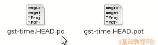

Poedit 基础教程
作者：TeliuTe 来源：基础教程网
po文件用于多语言程序，可以很方便地把程序翻译为本地语言，下面我们来看一个练习；
1、po 文件
1）po 文件可以在程序源代码中找到，或者从一些本地化翻译网站上下载；

2）用文本编辑器打开后，可以看到里面是文本，开头一般是名称、日期、地区等描述；
3）再往下就是具体的词条内容，一般至少有两行，一行是英文，下一行是翻译后的本地语言，都用英文双引号括起来；
4）带 # 开头的一行是注释，这句不用翻译，用来定位词条的，
msgid " 开头的一行是原文，双引号里面是要翻译的词条，
msgstr " 开头的一行是译文，双引号里是翻译的内容，双引号是英文的，
#, fuzzy 表明这个词条是模糊翻译，删除这一行后，就是确定翻译；
2、pot 文件
1）pot 文件是模板文件，用于生成po文件，它也是文本文件，跟 po 文件的区别就是前面的头信息是空的；
2）使用 Poedit 打开 pot模板文件，会自动生成 po文件，
也可以自己修改前面的信息，然后另存为 po 文件；
3）注意，必须用规范的文本编辑器进行编辑，不能使用 Windows 自带的记事本，Ubuntu/Linux 自带的文本编辑器可以使用，
还可以使用 gtranslator、Geany 等支持 UTF-8 的编辑器；
本节学习了po 和 pot 文件格式，如果你成功地完成了练习，请继续学习下一课内容；
本教程由86团学校TeliuTe制作|著作权所有
基础教程网：http://teliute.org/
美丽的校园……
转载和引用本站内容，请保留作者和本站链接。